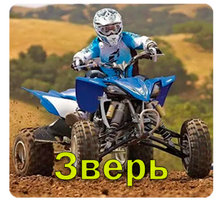

Зверь

269.000 рублей
Квадроцикл "Зверь" представляет собой мощное и универсальное транспортное средство,
созданное для безграничных приключений на природе и экстремальных поездок.
С невероятной проходимостью и маневренностью, он становится идеальным спутником
для любителей активного отдыха и путешествий.
Основные характеристики "Зверя" включают:
Мощный двигатель: Квадроцикл оснащен мощным двигателем, который обеспечивает высокую скорость
и преодоление сложных маршрутов на бездорожье.
Четыре колеса: С четырьмя колесами и устойчивой подвеской "Зверь" обеспечивает
стабильность на пересеченной местности и позволяет преодолевать преграды.
Проходимость: Большой клиренс и мощная трансмиссия позволяют квадроциклу
"Зверь" преодолевать грязь, песок, камни и снег, делая его идеальным для экстремальных приключений.
Удобство управления: Интуитивное управление и комфортабельное
сиденье делают поездки на "Звере" удовольствием для водителя.
Безопасность: Встроенные системы безопасности, такие как стабилизация
и мощные тормоза, обеспечивают безопасность во время экстремальных маневров.
Стильный дизайн: Современный и агрессивный дизайн "Зверя" придаёт ему
неповторимый характер и выделяет среди других квадроциклов.
Квадроцикл "Зверь" создан для тех, кто ищет адреналиновые приключения
и готов исследовать самые отдаленные уголки природы. Он станет верным спутником
на вашем пути к экстремальным впечатлениям и неизведанным местам.